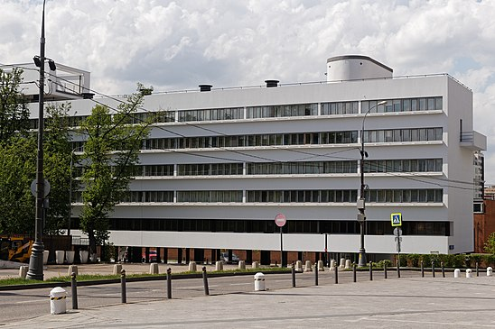

Материал из Википедии — свободной энциклопедии
| Текущая версия страницы пока не проверялась опытными участниками и может значительно отличаться от версии, проверенной 16 августа 2023 года; проверки требуют 5 правок. |
 памятник архитектуры (местного значения)
памятник архитектуры (местного значения)
Дом Наркомфи́на — один из знаковых памятников архитектуры советского авангарда и конструктивизма. Построен в 1928—1930 годах по проекту архитекторов Моисея Гинзбурга, Игнатия Милиниса и инженера Сергея Прохорова[2] для работников Народного комиссариата финансов СССР (Наркомфина). Автор замысла дома Наркомфина М. Я. Гинзбург определял его как «опытный дом переходного типа»[3]. Дом находится в Москве по адресу: Новинский бульвар, дом 25, корпус 1.

С начала 1990-х годов дом находился в аварийном состоянии, был трижды включён в список «100 главных зданий мира, которым грозит уничтожение»[4]. В 2017—2020 годах отреставрирован[5][6] по проекту АБ «Гинзбург Архитектс». Сейчас Дом Наркомфина — и памятник архитектуры, и жилой дом.
В 2021 году Музей современного искусства «Гараж» инициировал масштабное исследование Дома Наркомфина, в том числе истории жизни его создателей и обитателей на протяжении почти ста лет. Полученное знание становится основой экскурсионных маршрутов, публикаций, разнообразных публичных и просветительских проектов, выстроенных вокруг легендарного дома. Помимо этого, для жильцов дома, патронов Музея и владельцев карт GARAGE доступно кафе Дома Наркомфина, а на первом этаже жилого корпуса открылся книжный магазин.[7]

Из всех различных индивидуумов и групп, занимавшихся реформированием повседневной жизни и консолидации социализма в 1920-е годы, архитекторы занимали исключительное положение. Архитектурная инновация Дома Коммуны представляет наиболее полную попытку осуществления реформирования быта и консолидации советского социализма. Самой влиятельной группой архитекторов в этой области являлась ОСА (Объединение современных архитекторов, которую возглавлял М. Я. Гинзбургом). В то время как прочие реформаторы быта пытались внедрить реформистские практики в остатки существующих дореволюционных форм, группа ОСА (образована в 1925 году М. Я. Гинзбургом и братьями Весниными), более известная как конструктивисты, пыталась решить проблему «нового быта» напрямую созданием принципиально новой архитектуры и материальной культуры, основанных на коммунистических отношениях производства и потребления[8].
Дом Наркомфина, или 2-й дом Совнаркома (СНК) РСФСР, стал одним из экспериментальных домов, построенных по результатам теоретических исследований Секции типизации Стройкома РСФСР, созданной по инициативе М. Я. Гинзбурга и работавшей под его руководством в 1928—1929 годы (в работе также участвовали входившие в объединение ОСА: М. О. Барщ, В. Н. Владимиров, А. Л. Пастернак, Г. Р. Сум-Шик). Задачей Стройкома являлось разработка и проектирование новых форм жилья для нового советского общества. Как сказано в монографии Йоганнеса Крамера[de] «Das Narkomfin Kommunehaus In Moskau 1928—2012», «аналогичные устремления существовали в то же время и в Германии, где этими вопросами занимался Исследовательский институт экономической эффективности в строительстве и жилищном хозяйстве (RfG[de]), хотя полученные им результаты были менее радикальными и менее призрачными»[9].
Заказчиком жилого комплекса выступал нарком финансов РСФСР (1924—1929) Н. А. Милютин, известный как автор схем социалистического расселения и градостроительных концепций соцгорода[12], он же определил функциональные характеристики будущего здания[13]. Сотрудничество наркома Н. А. Милютина и архитектора М. Я. Гинзбурга началось несколько раньше, на строительстве дома Госстраха (1926—1927), — Милютин был инициатором строительства двух домов Госстраха в Москве. Идеи Н. А. Милютина об устройстве жилища воплотились при создании дома Наркомфина (Дома-парохода, или 2-го дома СНК).
Между тем М. Я. Гинзбург подчёркивает:
«мы сочли совершенно необходимым создание ряда моментов, стимулирующих переход на более высокую форму социально-бытового уклада, но не декретирующих этот переход»[28].